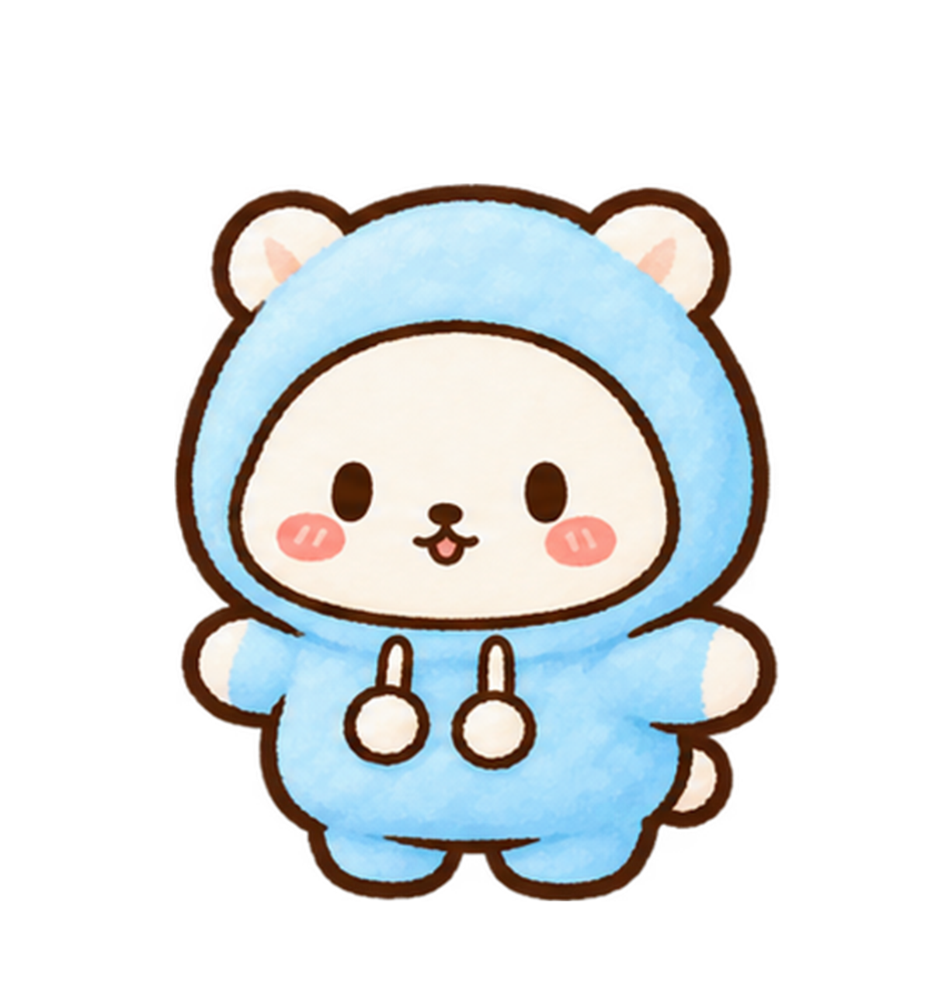

<!doctype html>
<html lang="ko">
<head>
<meta charset="utf-8"><meta name="viewport" content="width=device-width,initial-scale=1">
<title>방구석 세진이 · 외출</title>
<style>
:root{--ink:#5b4a42;--sub:#8b766b;--line:#e9d8c8;--card:#ffffff;--bg:#fbf3ea;--btn:#8fc3e0;--btn-d:#6fa6c4;--pink:#f2a7b5;--lock:#d8cbbf}
*{box-sizing:border-box}
body{margin:0;min-height:100dvh;background:var(--bg);color:var(--ink);font-family:"Pretendard","Apple SD Gothic Neo","Malgun Gothic",system-ui,sans-serif}
.page{max-width:720px;margin:0 auto;padding:12px 16px 8px}
.top{display:flex;align-items:center;gap:10px;margin-bottom:10px}
.back{appearance:none;border:0;background:#fff;color:var(--ink);font:inherit;font-size:13px;font-weight:bold;padding:8px 12px;border-radius:12px;box-shadow:0 2px 0 var(--line);text-decoration:none;white-space:nowrap}
.top h1{flex:1;margin:0;font-size:20px;min-width:0}
.top h1 small{display:block;font-size:11px;font-weight:normal;color:var(--sub)}
.chip{font-size:12px;font-weight:bold;background:#fff;border-radius:12px;padding:6px 10px;box-shadow:0 2px 0 var(--line);white-space:nowrap}
.scene{position:relative;aspect-ratio:4/3;border-radius:22px;overflow:hidden;border:3px solid #fff;box-shadow:0 8px 24px #8875671a;background:var(--tint,#eef3e8)}
.scene .bg{position:absolute;inset:0;width:100%;height:100%;object-fit:cover}
.scene .empty{position:absolute;inset:0;display:grid;place-items:center;color:var(--sub);font-size:13px;text-align:center;padding-bottom:40%}
.sejin{position:absolute;aspect-ratio:.806;transform:translateX(-50%);background:url(assets/character/base-v1.png) 51% 58.5%/150.9% 128.1% no-repeat;border:0;padding:0;cursor:pointer;filter:drop-shadow(0 4px 0 #0000000f)}
.sejin .aform{position:absolute;left:-12%;bottom:0;width:124%;height:auto;opacity:0;pointer-events:none;transform-origin:50% 90%}.sejin.angel{background-image:none}.sejin.angel .aform{opacity:1}
.sejin.charging{filter:drop-shadow(0 0 14px #fff) drop-shadow(0 0 28px #ffe9a8) brightness(1.15);animation:charge .2s infinite alternate}@keyframes charge{from{transform:translateX(-50%) rotate(-2.5deg)}to{transform:translateX(-50%) translateY(-3px) rotate(2.5deg)}}
.sejin:focus-visible{outline:3px solid var(--btn);outline-offset:4px;border-radius:12px}
.flash{position:absolute;inset:0;background:radial-gradient(circle at 50% 60%,#fff 0,#fff7cf 38%,#fff0 76%);pointer-events:none;z-index:6;opacity:0}
.fx{position:absolute;pointer-events:none;z-index:7;line-height:1;font-style:normal;text-shadow:0 0 6px #fff}
.ring{position:absolute;width:60px;height:60px;border:4px solid #fff3a8;border-radius:50%;margin:-30px 0 0 -30px;pointer-events:none;z-index:6;box-shadow:0 0 14px #fff}
.feather{position:absolute;width:11px;height:19px;background:#fff;border:1.5px solid #cfe6f2;border-radius:60%/70% 70% 40% 40%;pointer-events:none;z-index:7;box-shadow:0 0 6px #fff}
.bubble{position:absolute;z-index:4;transform:translate(-50%,-100%);width:max-content;max-width:78%;background:#fff;border-radius:14px;padding:7px 12px;font-size:13px;line-height:1.35;text-align:center;box-shadow:0 2px 0 var(--line)}
.bubble::after{content:"";position:absolute;left:50%;bottom:-6px;margin-left:-6px;border:6px solid transparent;border-bottom:0;border-top-color:#fff}
.bubble small{display:block;font-size:10px;font-weight:bold;color:#8b766b;margin-bottom:1px}
.bubble.npcb{background:#fff8ec}.bubble.npcb::after{border-top-color:#fff8ec}
.npc{position:absolute;transform:translateX(-50%);border:0;padding:0;background:none;cursor:pointer;filter:drop-shadow(0 4px 0 #0000000f)}
.npc img{width:100%;height:auto;display:block;pointer-events:none}
.npc:focus-visible{outline:3px solid var(--btn);outline-offset:4px;border-radius:12px}
.spot{position:absolute;border-radius:14px;display:block}.spot:focus-visible{outline:3px solid var(--btn)}
.spot .pin{position:absolute;left:50%;top:-8px;transform:translateX(-50%);background:#fff;border-radius:999px;padding:3px 8px;font-size:15px;box-shadow:0 2px 0 var(--line);animation:bob 1.6s ease-in-out infinite}
@keyframes bob{50%{transform:translate(-50%,-5px)}}
/* game icons sit on the picture itself: tap to start */
.gicon{position:absolute;z-index:3;transform:translate(-50%,-50%);display:flex;flex-direction:column;align-items:center;gap:3px;border:0;background:none;padding:0;color:var(--ink);font:inherit;text-decoration:none;cursor:pointer}
.gicon .ic{position:relative;display:grid;place-items:center;width:46px;height:46px;border-radius:50%;background:#fff;border:3px solid #8fc3e0;font-size:23px;box-shadow:0 3px 0 #6fa6c4;animation:bob2 1.8s ease-in-out infinite}
.gicon small{font-size:11px;font-weight:bold;background:#ffffffdd;border-radius:9px;padding:1px 8px;white-space:nowrap}
.gicon em{position:absolute;right:-6px;top:-6px;font-style:normal;font-size:12px;background:#a9cfa4;color:#fff;border-radius:50%;width:19px;height:19px;display:grid;place-items:center;font-weight:bold}
.gicon:focus-visible .ic,.gicon:hover .ic{border-color:#f2a7b5;box-shadow:0 3px 0 #d68a9a}
@keyframes bob2{50%{transform:translateY(-4px)}}
.fchip{position:absolute;left:8px;top:8px;z-index:3;background:#ffffffe6;border-radius:12px;padding:4px 10px;font-size:12px;font-weight:bold}.fchip span{color:#e58c9c;letter-spacing:1px}
.toast{position:absolute;right:8px;top:8px;z-index:5;max-width:60%;background:#fffaf0;border:2px solid #f5d58a;border-radius:12px;padding:5px 10px;font-size:12px;font-weight:bold}
.choices{position:absolute;left:4%;right:4%;bottom:3%;z-index:5;display:flex;flex-wrap:wrap;justify-content:center;gap:6px}.choices:empty{display:none}
.choices button{border:2px solid #fff;background:#eaf3f9;color:var(--ink);font:inherit;font-size:13px;font-weight:bold;padding:8px 13px;border-radius:14px;box-shadow:0 2px 0 var(--line);cursor:pointer}
.choices a.gobtn{border:2px solid #fff;background:var(--btn);color:#fff;font:inherit;font-size:13px;font-weight:bold;padding:8px 14px;border-radius:14px;box-shadow:0 3px 0 var(--btn-d);text-decoration:none}
.pop{position:absolute;left:5%;right:5%;bottom:4%;z-index:8;background:#fffffff2;border-radius:18px;padding:12px 14px;box-shadow:0 8px 24px #88756733}
.pop[hidden]{display:none}.pop .x{position:absolute;right:8px;top:6px;border:0;background:none;font-size:16px;color:var(--sub);cursor:pointer}
.pop h3{margin:0 0 8px;font-size:14px}.pop h3 small{font-weight:normal;color:var(--sub);font-size:11.5px;margin-left:4px}
.ribs{display:flex;justify-content:center;gap:8px}.ribs button{display:flex;flex-direction:column;align-items:center;gap:2px;border:2px solid #fff;background:#fffaf4;color:var(--ink);font:inherit;font-size:11px;font-weight:bold;padding:6px 10px;border-radius:12px;box-shadow:0 2px 0 var(--line);cursor:pointer}.ribs button i{width:22px;height:22px;border-radius:50%;border:2px solid #8a6f60}.ribs button small{font-weight:normal;color:var(--sub)}
.fchip .giftbtn{margin-left:4px;border:0;background:#f2a7b5;color:#fff;font:inherit;font-size:11px;font-weight:bold;padding:2px 8px;border-radius:9px;cursor:pointer}
.rows{display:grid;gap:5px;max-height:40vh;overflow:auto}.row{display:flex;align-items:center;justify-content:space-between;gap:8px;background:#fffaf4;border-radius:10px;padding:5px 8px;font-size:12.5px;font-weight:bold}
.row small{display:block;font-weight:normal;color:var(--sub);font-size:10.5px}.row small b.ok{color:#5b8a5b}.row small b.no{color:#c0605f;font-weight:normal}
.row button{flex:none;border:0;font:inherit;font-size:12px;font-weight:bold;padding:6px 11px;border-radius:10px;background:var(--btn);color:#fff;box-shadow:0 2px 0 var(--btn-d);cursor:pointer}.row button:disabled{background:var(--lock);box-shadow:none;cursor:default}
/* quest marker over a friend */
.qmark{position:absolute;left:50%;top:-6%;transform:translateX(-50%);display:grid;place-items:center;width:30px;height:30px;border-radius:50%;background:#ffd23f;border:3px solid #fff;color:#5b3a1e;font-style:normal;font-weight:900;font-size:19px;line-height:1;box-shadow:0 3px 0 #c99a1a,0 0 0 2px #5b3a1e55;animation:qb 1.1s ease-in-out infinite;pointer-events:none}.qmark.q2{background:#8fd3ff;color:#16384f;box-shadow:0 3px 0 #4a9fcf,0 0 0 2px #1e3a5b55}.qmark[hidden]{display:none}
@keyframes qb{50%{transform:translateX(-50%) translateY(-6px)}}
/* visual-novel scene over the place picture (tap the friend) */
.vno{position:absolute;inset:0;z-index:12;background:linear-gradient(#3a2a4a22,#3a2a4a77);animation:vnin .3s ease-out}
.vno[hidden]{display:none}
@keyframes vnin{from{opacity:0}}
.vno .vs,.vno .vf{position:absolute;top:9%;height:40%;width:auto;display:block;filter:drop-shadow(0 6px 8px #4a3a5a55);transition:filter .3s}
.vno .vs{left:4%}.vno .vf{right:4%;top:auto;bottom:51%;height:33%}   /* 친구(주민)를 세진이보다 조금 작게, 발 위치는 같게 */
.vno .dim{filter:brightness(.72) saturate(.85) drop-shadow(0 6px 8px #4a3a5a55)}
.vbox{position:absolute;left:3%;right:3%;bottom:3%;min-height:28%;background:#fffdf8f2;border:3px solid #fff;border-radius:18px;padding:18px 14px 10px;box-shadow:0 8px 24px #4a3a5a55;cursor:pointer}
.vname{position:absolute;left:12px;top:-13px;background:#b9a3e3;color:#fff;font-weight:bold;font-size:12px;padding:3px 13px;border-radius:12px;border:2px solid #fff}.vname.s{background:#8fc3e0}
.vtxt{font-size:14px;line-height:1.6;min-height:2.6em;white-space:pre-line}
.vnext{position:absolute;right:12px;bottom:6px;font-size:12px;color:#b9a3e3;animation:vnb 1s ease-in-out infinite}.vnext[hidden]{display:none}
@keyframes vnb{50%{transform:translateY(3px)}}
.vch{display:flex;flex-direction:column;gap:6px;margin-top:8px}.vch:empty{display:none}
.vch button{border:2px solid #e2d5ee;background:#fff;color:var(--ink);font:inherit;font-weight:bold;font-size:13.5px;padding:9px;border-radius:12px;box-shadow:0 2px 0 var(--line);cursor:pointer}
.vch button.main{background:var(--btn);color:#fff;border-color:var(--btn-d)}
@media (prefers-reduced-motion:reduce){.vno,.vnext{animation:none}}/* craft effect: flash, sparkle ring, the item popping up */
.craftfx{position:absolute;inset:0;z-index:9;pointer-events:none;overflow:hidden;display:grid;place-items:center}
.craftfx .flash{position:absolute;inset:0;background:radial-gradient(circle at 50% 46%,#fff 0,#fff8 25%,#fff0 62%);animation:cfflash 1.5s ease-out forwards}
.craftfx .it{position:relative;font-size:76px;line-height:1;filter:drop-shadow(0 0 12px #fff) drop-shadow(0 4px 0 #8a6f6055);animation:cfpop 1.7s cubic-bezier(.2,1.4,.4,1) forwards}
.craftfx .nm{position:absolute;top:62%;font-weight:bold;font-size:17px;color:#6d4f43;background:#fffffff0;border:3px solid #f5d58a;border-radius:14px;padding:4px 14px;animation:cftext 1.7s ease-out forwards}
.craftfx .sp{position:absolute;left:50%;top:46%;font-size:20px;line-height:1;animation:cfspark 1.2s ease-out forwards;opacity:0}
@keyframes cfflash{0%{opacity:0}15%{opacity:1}100%{opacity:0}}
@keyframes cfpop{0%{transform:scale(.1) rotate(-30deg);opacity:0}30%{transform:scale(1.3) rotate(8deg);opacity:1}50%{transform:scale(.95) rotate(-4deg)}70%,88%{transform:scale(1.05) rotate(0)}100%{transform:scale(1);opacity:0}}
@keyframes cftext{0%,30%{opacity:0;transform:translateY(10px)}45%,85%{opacity:1;transform:none}100%{opacity:0}}
@keyframes cfspark{0%{opacity:0;transform:translate(-50%,-50%) scale(.3)}20%{opacity:1}100%{opacity:0;transform:translate(calc(-50% + var(--dx)),calc(-50% + var(--dy))) scale(1.1) rotate(200deg)}}
@keyframes cfshake{0%,100%{transform:none}20%{transform:translateX(-3px) rotate(-.4deg)}40%{transform:translateX(3px) rotate(.4deg)}60%{transform:translateX(-2px)}80%{transform:translateX(2px)}}
.none{margin:6px 0;font-size:12px;color:var(--sub);text-align:center}
.pop .msg{margin:6px 0 0;font-size:11.5px;color:var(--sub);text-align:center;min-height:1.2em}
.needs{display:grid;gap:5px}.need{display:flex;align-items:center;justify-content:space-between;gap:8px;font-size:12px;font-weight:bold;padding:5px 9px;border-radius:10px;background:#fffaf4;border:2px dashed #e7b9c3;color:var(--ink);text-decoration:none}.need.ok{border-style:solid;border-color:#cfe6cf;background:#f3faf1;color:#5b8a5b}.need small{font-weight:normal;color:var(--sub);font-size:10.5px;margin-left:4px}.need em{font-style:normal}
.pop .go{display:block;width:100%;margin-top:9px;border:0;font:inherit;font-weight:bold;font-size:14px;padding:10px;border-radius:13px;background:var(--btn);color:#fff;box-shadow:0 3px 0 var(--btn-d);cursor:pointer;text-align:center;text-decoration:none}.pop .go:disabled{background:var(--lock);box-shadow:0 3px 0 #c2b3a5;cursor:default}
.locked{text-align:center;padding:40px 16px;background:var(--card);border-radius:22px}
.locked b{font-size:18px}.locked p{color:var(--sub)}.locked a{display:inline-block;margin-top:8px;padding:10px 16px;border-radius:14px;background:var(--btn);color:#fff;font-weight:bold;text-decoration:none;box-shadow:0 3px 0 var(--btn-d)}
/* the author's doll banner stays, but as one slim line */
.promo{margin:10px 0 6px!important;padding:8px 12px!important;border-radius:14px!important;gap:8px!important;background:#fffaf4!important;border:1px dashed #e7b9c3!important}
.promo .promo-pic,.promo p{display:none!important}.promo b{font-size:12.5px!important;font-weight:normal!important}.promo .promo-label{display:none!important}.promo .promo-btn{padding:5px 10px!important;font-size:11px!important}
@media (prefers-reduced-motion:reduce){.spot .pin,.gicon .ic{animation:none}}
@media (max-width:420px){.page{padding:10px 12px}.top h1{font-size:17px}.gicon .ic{width:40px;height:40px;font-size:20px}}
/* 대화 장면이 열려 있는 동안 장면 속 작은 캐릭터·아이콘은 숨겨 두 번 보이지 않게 */
.scene.talking #sejin,.scene.talking #npc,.scene.talking .gicon,.scene.talking .bubble,.scene.talking .fchip,.scene.talking .qmark{visibility:hidden}
/* 작은 화면(폰): 선택지가 많아도 잘리지 않도록 대화창을 화면 아래에 고정 */
@media (max-width:560px){.vbox{position:fixed;left:8px;right:8px;bottom:8px;z-index:60;max-height:64dvh;overflow:auto;min-height:0;padding-top:14px}.vname{position:static;display:inline-block;margin:0 0 6px}}
</style>
</head>
<body>
<main class="page" id="page"></main>
<div class="page" style="padding-top:0"><div data-promo=""></div></div>
<script src="sejin-save.js"></script>
<script src="sejin-places.js"></script>
<script src="sejin-items.js"></script>
<script src="sejin-convos.js"></script>
<script src="sejin-quests.js"></script><script src="sejin-sfx.js"></script>
<script src="sejin-promo.js"></script>
<script>
(()=>{
 'use strict';
 const page=document.getElementById('page');
 const still=matchMedia('(prefers-reduced-motion: reduce)').matches;
 const save=SejinSave.load()||{},xp=save.xp??40,{lv}=SejinPlaces.levelInfo(xp);
 // Totals = what the room saved + results still waiting (minigame yarn, ribbons picked up, purchases).
 const view=()=>SejinSave.pendingView(SejinPlaces.dollById),bagBase=save.bag||{};
 const yarnNow=()=>Math.max(0,(save.yarn??120)+view().yarn),bagNow=id=>Math.max(0,(bagBase[id]||0)+(view().bag[id]||0));
 const updateChip=()=>{const c=document.getElementById('yarnChip');if(c)c.textContent='실뭉치 '+yarnNow();};
 const id=new URLSearchParams(location.search).get('place'),p=SejinPlaces.byId(id);
 const mapHref='design/raising-mockup.html#out'+(p?'='+p.id:'');
 // 에너지: 뜨개 달리기 한 판에만 쓰는 값(방의 에너지와 같음). 장소 안의 게임·이야기는 에너지를 쓰지 않는다.
 const energyNow=()=>{try{return SejinSave.energyNow();}catch(e){return 0;}};
 const top=(title,sub)=>`<div class="top"><a class="back" href="${mapHref}">‹ 지도로</a><h1>${title}<small>${sub}</small></h1><span class="chip">Lv.${lv}</span><span class="chip" id="yarnChip">실뭉치 ${yarnNow()}</span><button class="chip" id="enChip" type="button" aria-label="에너지 안내" style="border:0;font:inherit;cursor:pointer">⚡ ${energyNow()}</button></div>`;

 if(!p||p.home){location.replace('design/raising-mockup.html');return;}
 document.title='방구석 세진이 · '+p.name;
 // Opened by typing the address while still locked: explain instead of showing the place.
 if(!SejinPlaces.isOpen(p,save.dolls)){
  page.innerHTML=top(p.name,'아직 갈 수 없어요')+`<div class="locked"><b>${SejinPlaces.needText(p)}</b><p>집 작업실에서 인형을 완성하면 이곳에 갈 수 있어요.</p><a href="${mapHref}">지도로 돌아가기</a></div>`;
  return;
 }
 // 산책로: Sejin earns the angel form. The state is one flag in this browser (sejin-angel-v1).
 // AKEY = the angel form has been earned (stays forever); FKEY = which form Sejin wears now ('normal' = plain Sejin, otherwise the angel form). Sejin can switch back and forth at the 산책로.
 const AKEY='sejin-angel-v1',FKEY2='sejin-form-v1';
 const isUnlocked=()=>{try{return localStorage.getItem(AKEY)==='1';}catch(e){return false;}};
 const isAngel=()=>{try{return isUnlocked()&&localStorage.getItem(FKEY2)!=='normal';}catch(e){return false;}};
 const IT=SejinItems;
 const s=p.stand||{x:50,b:12,w:17},npc=p.npc||null;
 const CLEAR_OF={'pattern.html':'pattern','merge.html':'merge','spot.html':'spot','ribbon.html':'ribbon','friend.html':'friend'};
 const clears=SejinSave.clears.get();
 // Friendship with the character of this place: {id:{talks, day}} (day = last day the chat reward was given).
 const FKEY='sejin-npc-v1',friends=(()=>{try{return JSON.parse(localStorage.getItem(FKEY))||{};}catch(e){return {};}})();
 const fr=npc?(friends[npc.id]=friends[npc.id]||{talks:0,day:''}):null;
 const saveFr=()=>{try{localStorage.setItem(FKEY,JSON.stringify(friends));}catch(e){}};
 // Love points: a daily talk +2, gifts +1 / +2 / +5 (liked); 6 points = 1 heart (max 5). Old saves counted talks only.
 if(fr&&fr.love==null)fr.love=(fr.talks||0)*2;
 const hearts=()=>{const h=Math.min(5,Math.floor(fr.love/6));return '♥'.repeat(h)+'♡'.repeat(5-h);};
 const games=(p.games||[]).filter(g=>g.href&&g.at);
 const icon=(g)=>`<a class="gicon" href="${g.href}" style="left:${g.at[0]}%;top:${g.at[1]}%" aria-label="${g.name} 시작"><span class="ic">${g.icon||'▶'}${clears[CLEAR_OF[g.href]]?'<em>✔</em>':''}</span><small>${g.short||g.name}</small></a>`;
 const btn=(idn,at,ic,label)=>`<button class="gicon" id="${idn}" style="left:${at[0]}%;top:${at[1]}%" aria-label="${label}"><span class="ic">${ic}</span><small>${label}</small></button>`;
 page.innerHTML=top(p.name,p.desc)+
  `<div class="scene" id="scene" style="--tint:${p.tint||'#eef3e8'}">`+
   (p.scene?``:`<div class="empty">${p.name} 풍경 그림을 준비하고 있어요.</div>`)+
   (p.spots||[]).map(sp=>`<a class="spot" href="${sp.href}" aria-label="${sp.label}" style="left:${sp.x}%;top:${sp.y}%;width:${sp.w}%;height:${sp.h}%"><span class="pin">${sp.icon||'✦'}</span></a>`).join('')+
   (npc?'':games.map(icon).join(''))+   // places with a friend start their game from talking to the friend
   (p.id==='shop'?btn('sellBtn',[14,80],'💰','팔기'):'')+
   (p.gather?p.gather.spots.map(s=>btn('gather-'+s.id,s.at,s.icon,s.short)).join(''):'')+
   (p.craft?btn('craftBtn',p.craft.at,p.craft.icon,p.craft.short):'')+
   (p.register?btn('regBtn',p.register.at,p.register.icon,p.register.short):'')+
   (p.transform?btn('wingBtn',[50,34],isAngel()?'🪽':'✨',isAngel()?'천사 마을':isUnlocked()?'천사로 변신':'천사 변신'):'')+
   (npc?`<button class="npc" id="npc" aria-label="${npc.name}에게 말 걸기" style="left:${npc.x}%;bottom:${npc.b}%;width:${npc.w}%"></button>`:'')+
   `<button class="sejin${p.transform&&isAngel()?' angel':''}" id="sejin" aria-label="세진이 쓰다듬기" style="left:${s.x}%;bottom:${s.b}%;width:${s.w}%">${p.transform?``:''}</button>`+
   `<div class="bubble" id="bubble" aria-live="polite"></div>`+
   (npc?`<div class="fchip" title="호감도">${npc.name} <span id="hearts">${hearts()}</span> <button class="giftbtn" id="giftBtn" aria-label="${npc.name}에게 선물하기">선물하기</button></div>`:'')+
   `<div class="choices" id="choices"></div>`+
   `<div class="pop" id="listPop" hidden><button class="x" aria-label="닫기">✕</button><h3 id="listTitle"></h3><div class="rows" id="listRows"></div><p class="msg" id="listMsg"></p></div>`+
   (p.transform?`<div class="pop" id="wingPop" hidden><button class="x" aria-label="닫기">✕</button><div id="wingBody"></div></div>`:'')+
  `</div>`;
 const scene=document.getElementById('scene'),sejin=document.getElementById('sejin'),bubble=document.getElementById('bubble'),npcEl=document.getElementById('npc'),choicesEl=document.getElementById('choices');
 const hop=el=>{if(still||!el)return;el.animate([{transform:'translateX(-50%) translateY(0)'},{transform:'translateX(-50%) translateY(-9%)'},{transform:'translateX(-50%) translateY(0)'}],{duration:320,easing:'ease-out'});};
 // One speech bubble over whoever is speaking; the name is written in it when it is the friend.
 function say(text,who){
  const el=who==='n'&&npcEl?npcEl:sejin,r=el.getBoundingClientRect(),sr=scene.getBoundingClientRect();
  bubble.innerHTML=(who==='n'&&npc?'<small>'+npc.name+'</small>':'')+text;bubble.className='bubble'+(who==='n'?' npcb':'');
  const cx=(r.left+r.width/2-sr.left)/sr.width*100;bubble.style.left=Math.max(22,Math.min(78,cx))+'%';bubble.style.bottom='';bubble.style.top=Math.max(2,(r.top-sr.top)/sr.height*100-1)+'%';
  hop(el);
 }
 // A small note in the corner of the picture (rewards etc.).
 let toastT=0;function toast(text){let t=scene.querySelector('.toast');if(!t){t=document.createElement('div');t.className='toast';scene.append(t);}t.textContent=text;clearTimeout(toastT);toastT=setTimeout(()=>t.remove(),3800);}
 {const enc=document.getElementById('enChip');if(enc)enc.onclick=()=>toast('⚡ 에너지 '+energyNow()+' / 100 · 뜨개 달리기 한 판에 15를 써요. 이곳의 게임과 이야기는 에너지를 쓰지 않아요. (2분마다 +1, 낮잠·간식으로 채워요)');}
 // Characters walk in from the sides, then greet.
 if(!still){sejin.animate([{transform:'translateX(-260%)',opacity:0},{transform:'translateX(-50%)',opacity:1}],{duration:700,easing:'ease-out'});
  if(npcEl)npcEl.animate([{transform:'translateX(160%)',opacity:0},{transform:'translateX(-50%)',opacity:1}],{duration:800,delay:200,easing:'ease-out',fill:'backwards'});}
 setTimeout(()=>say(p.transform&&isAngel()?p.angelGreet:p.greet,'s'),still?0:700);
 let LINES=(p.transform&&isAngel()?p.angelLines:p.lines)||['…헤헤.','여기 좋다.','같이 와 줘서 고마워.'];let n=0;
 const closeBtns=()=>document.querySelectorAll('.pop .x').forEach(b=>b.onclick=()=>b.parentNode.hidden=true);closeBtns();
 const openPop=pid=>{document.querySelectorAll('.pop').forEach(e=>e.hidden=e.id!==pid);};

 // ---- Shared list window (sell / craft / gift): rows of [emoji name, note, button].
 let listMode='';
 const have=id=>bagNow(id);
 function openList(mode){listMode=mode;document.querySelectorAll('.pop').forEach(e=>e.hidden=e.id!=='listPop');renderList();}
 function renderList(){
  const T=document.getElementById('listTitle'),R=document.getElementById('listRows'),M=document.getElementById('listMsg');M.textContent=listMode==='msg'?M.textContent:'';
  let rows='';
  if(listMode==='sell'){
   T.innerHTML='💰 팔기 <small>가방의 물건을 실뭉치로 바꿔요</small>';
   const mine=IT.ALL.filter(x=>have(x.id)>0&&!x.noSell);
   rows=mine.length?mine.map(x=>`<div class="row"><span>${IT.img(x)} ${x.name} <small>×${have(x.id)}</small></span><button data-sell="${x.id}">실뭉치 ${x.sell}</button></div>`).join(''):'<p class="none">팔 물건이 없어요. 채집하거나 소품을 만들어 보세요.</p>';
  }else if(listMode==='craft'){
   T.innerHTML='🛠️ 소품 만들기 <small>재료는 공원·산책로, 실은 실타래 합치기에서</small>';
   rows=IT.CRAFTS.map(r=>{const ok=IT.canCraft(r,Object.fromEntries(IT.ALL.map(x=>[x.id,have(x.id)])));
    return `<div class="row"><span>${IT.img(r)} ${r.name}<small>${Object.entries(r.needs).map(([k,n])=>`<b class="${have(k)>=n?'ok':'no'}">${IT.byId[k].name} ${have(k)}/${n}</b>`).join(' · ')}</small></span><button data-craft="${r.id}"${ok?'':' disabled'}>만들기</button></div>`;}).join('');
  }else if(listMode==='reg'){   // 도안 등록: 기본 도안은 처음부터 등록돼 있고, 천사 마을 도안은 천사 마을에서 퍼즐을 풀어야 등록된다 (천사 마을 도안 그림·작업실 연결은 나중에)
   T.innerHTML='📜 도안 등록 <small>기본 도안은 등록돼 있어요 · 천사 마을 도안은 퍼즐을 풀면 등록돼요</small>';
   const vs=(()=>{try{return (JSON.parse(localStorage.getItem('sejin-village-v1'))||{}).solved||{};}catch(e){return {};}})();
   const pd=(()=>{try{return (JSON.parse(localStorage.getItem('sejin-patterns-v1'))||{}).done||{};}catch(e){return {};}})();
   const base=[['strawberry','🍓','새콤 딸기'],['gift','🎁','리본 선물'],['yarnbasket','🧺','뜨개 바구니'],['sejin','🧸','기본 세진이'],['flowercup','🌸','꽃 찻잔'],['angel','😇','천사 세진이']];
   rows='<p class="none" style="text-align:left;margin:2px 0 0"><b>기본 도안</b> (등록됨)</p>'+base.map(([id,e,n])=>`<div class="row"><span>${e} ${n}<small>${pd[id]?'완성한 도안 ✔':'등록됨 · 도안 채우기로 만들 수 있어요'}</small></span><a class="gobtn" href="pattern.html?p=${id}" style="text-decoration:none;color:#fff;background:var(--btn);padding:6px 11px;border-radius:10px;font-size:12px;font-weight:bold">채우기</a></div>`).join('')+
    '<p class="none" style="text-align:left;margin:8px 0 0"><b>천사 마을 도안</b> (퍼즐을 풀면 등록)</p>'+
    [['pond','💧','작은 연못 도안'],['cloudshop','🧶','구름 실 가게 도안'],['giftshop','🎁','선물 가게 도안'],['house','🏠','보랏빛 집 도안']].map(([id,e,n])=>`<div class="row"><span>${e} ${n}<small>${vs[id]?'등록 완료 · 작업실에서 만들기는 준비 중':'천사 마을 퍼즐을 완성하면 등록돼요'}</small></span><button disabled>${vs[id]?'등록됨 ✔':'잠김'}</button></div>`).join('');  }else if(listMode==='gift'){
   T.innerHTML=`🎁 ${npc.name}에게 선물 <small>오늘 ${Math.max(0,3-giftsToday())}번 더</small>`;
   const mine=IT.ALL.filter(x=>have(x.id)>0&&x.kind!=='yarn').sort((a,b)=>(npc.likes.includes(b.id)?1:0)-(npc.likes.includes(a.id)?1:0));
   rows=mine.length?mine.map(x=>`<div class="row"><span>${IT.img(x)} ${x.name} <small>×${have(x.id)}${npc.likes.includes(x.id)?' · <b class="ok">좋아해요 ♥</b>':''}</small></span><button data-gift="${x.id}">주기</button></div>`).join(''):'<p class="none">줄 물건이 없어요.</p>';
  }
  R.innerHTML=rows;
  R.querySelectorAll('[data-sell]').forEach(b=>b.onclick=()=>{const x=IT.byId[b.dataset.sell];SejinSave.pushResult({game:'sell',item:x.id,count:1,gain:x.sell,place:p.name});updateChip();toast(`${x.name} 판매 · 실뭉치 +${x.sell}`);renderList();});
  R.querySelectorAll('[data-craft]').forEach(b=>b.onclick=()=>{const r=IT.CRAFTS.find(c=>c.id===b.dataset.craft);SejinSave.pushResult({game:'craft',uses:r.needs,makes:{[r.id]:1},place:p.name});craftFx(r);window.SejinSfx&&SejinSfx.play('chime');try{updateMarker();}catch(e){}toast(`${IT.img(r)} ${r.name} 완성!`);renderList();});
  R.querySelectorAll('[data-gift]').forEach(b=>b.onclick=()=>giveGift(b.dataset.gift));
 }
 // Crafting impact: the scene shakes a little (the yarn is being worked), then a flash, sparkles and the finished item pop up.
 function craftFx(r){
  const sc=scene;sc.querySelectorAll('.craftfx').forEach(e=>e.remove());
  const d=document.createElement('div');d.className='craftfx';
  const marks=['✨','⭐','🌟','🧶','💖','✨'];let sp='';
  for(let i=0;i<18;i++){const a=i/18*Math.PI*2+Math.random()*.3,rad=90+Math.random()*80;sp+=`<i class="sp" style="--dx:${Math.cos(a)*rad|0}px;--dy:${Math.sin(a)*rad|0}px;animation-delay:${.45+Math.random()*.15}s">${marks[i%marks.length]}</i>`;}
  d.innerHTML=`<div class="flash" style="animation-delay:.4s"></div>${sp}<div class="it" style="animation-delay:.4s">${IT.img(r,84)}</div><div class="nm" style="animation-delay:.4s">${r.name} 완성!</div>`;
  sc.style.animation='cfshake .4s';setTimeout(()=>{sc.style.animation='';},420);
  sc.append(d);setTimeout(()=>d.remove(),2200);
 } // Gathering (공원 · 산책로): a few tries a day, 1-2 random materials each.
 const GKEY='sejin-gather-v1',gatherState=()=>{try{const g=JSON.parse(localStorage.getItem(GKEY))||{};return g.day===SejinSave.today()?g:{day:SejinSave.today()};}catch(e){return {day:SejinSave.today()};}};
 function gatherLeft(s){const cfg=IT.GATHER[p.gather.key][s.id];return Math.max(0,cfg.perDay-(gatherState()[p.gather.key+'-'+s.id]||0));}
 function gatherLabel(){for(const s of p.gather.spots){const b=document.getElementById('gather-'+s.id);if(!b)continue;const l=gatherLeft(s);b.querySelector('small').textContent=l?`${s.short} ${l}`:`${s.short} · 내일 또!`;b.style.opacity=l?1:.6;}}
 // Tap the tree or the bush: a rustle, and 1-2 materials fly up from it. Each spot can be tried twice a day.
 function gather(s){
  const btn=document.getElementById('gather-'+s.id);
  if(!gatherLeft(s)){toast(`${s.short}에서는 오늘 다 모았어요. 내일 또 와요!`);return;}
  const cfg=IT.GATHER[p.gather.key][s.id],g=gatherState(),n=1+(Math.random()<.4?1:0),got={};
  for(let i=0;i<n;i++){const id=cfg.pool[Math.floor(Math.random()*cfg.pool.length)];got[id]=(got[id]||0)+1;}
  g[p.gather.key+'-'+s.id]=(g[p.gather.key+'-'+s.id]||0)+1;try{localStorage.setItem(GKEY,JSON.stringify(g));}catch(e){}
  SejinSave.pushResult({game:'pickup',place:p.name,items:got});
  toast(Object.entries(got).map(([k,c])=>`${IT.byId[k].emoji} ${IT.byId[k].name} +${c}`).join('  '));gatherLabel();
  if(!still){btn.animate([{transform:'translate(-50%,-50%) rotate(0)'},{transform:'translate(-50%,-50%) rotate(-9deg)'},{transform:'translate(-50%,-50%) rotate(8deg)'},{transform:'translate(-50%,-50%) rotate(-5deg)'},{transform:'translate(-50%,-50%) rotate(0)'}],{duration:380});
   const items=[];Object.entries(got).forEach(([k,c])=>{for(let i=0;i<c;i++)items.push(IT.byId[k].emoji);});items.push('✨','🍃');
   items.forEach((em,i)=>{const f=document.createElement('i');f.className='fx';f.textContent=em;f.style.cssText=`left:${s.at[0]+(i-items.length/2)*3}%;top:${s.at[1]}%;font-size:22px`;scene.append(f);
    f.animate([{transform:'translate(-50%,0) scale(.4)',opacity:0},{transform:`translate(-50%,-34px) scale(1.2)`,opacity:1,offset:.4},{transform:`translate(-50%,-70px) scale(1)`,opacity:0}],{duration:1100,delay:i*90}).onfinish=()=>f.remove();});}
 } // Gifts: liked craft +5, any craft +2, anything else +1 love; at most 3 gifts a day per friend. A liked gift makes the friend give something back.
 const giftsToday=()=>fr&&fr.giftDay===SejinSave.today()?(fr.giftN||0):0;
 function giveGift(id){
  if(giftsToday()>=3){document.getElementById('listMsg').textContent='오늘은 충분히 받았대요. 내일 또 줘요!';return;}
  const x=IT.byId[id],liked=npc.likes.includes(id),add=liked?IT.LOVE.liked:x.kind==='craft'?IT.LOVE.craft:IT.LOVE.other;
  SejinSave.pushResult({game:'give',item:id,count:1,friend:npc.name,reward:0});
  const was=fr.love;fr.love+=add;fr.giftDay=SejinSave.today();fr.giftN=giftsToday()+1;saveFr();hiddenCheck(was);document.getElementById('hearts').textContent=hearts();
  let back='';
  if(liked){const pool=['m-feather','m-leaf','m-flower','m-purple','m-berry'],rid=Math.random()<.35?'m-feather':pool[1+Math.floor(Math.random()*4)];
   SejinSave.pushResult({game:'pickup',place:p.name,items:{[rid]:1}});back=` · 답례로 ${IT.byId[rid].emoji} ${IT.byId[rid].name}을 받았어요`;}
  document.getElementById('listPop').hidden=true;
  say(liked?'와! 내가 제일 좋아하는 거야! 고마워!':x.kind==='craft'?'예쁘다! 고마워.':'고마워, 잘 쓸게.','n');
  toast(`${liked?'♥ 좋아해요! ':''}호감도 +${add}${back}`);
 }
 if(document.getElementById('sellBtn'))document.getElementById('sellBtn').onclick=()=>openList('sell');
 if(document.getElementById('craftBtn'))document.getElementById('craftBtn').onclick=()=>openList('craft');
 if(document.getElementById('regBtn'))document.getElementById('regBtn').onclick=()=>openList('reg');
 if(p.gather){gatherLabel();p.gather.spots.forEach(s=>{document.getElementById('gather-'+s.id).onclick=()=>gather(s);});}
 if(document.getElementById('giftBtn'))document.getElementById('giftBtn').onclick=()=>openList('gift');
 // ---- 산책로: clear every place game → transformation scene → village.html ----
 function renderWing(){
  const el=document.getElementById('wingBody');if(!el||!p.transform)return;
  if(isAngel()){el.innerHTML=`<h3>🪽 천사 세진이 <small>변신 완료</small></h3><a class="go" href="village.html">천사 마을로 날아가기</a><button class="go" id="unform" style="background:#fff;color:var(--ink);box-shadow:0 3px 0 var(--line)">🐻 세진이로 돌아가기</button>`;document.getElementById('unform').onclick=revertForm;return;}
  if(isUnlocked()){el.innerHTML=`<h3>🐻 세진이 <small>천사 모습은 언제든 다시 입을 수 있어요</small></h3><button class="go" id="reform">🪽 천사로 변신하기</button>`;document.getElementById('reform').onclick=doTransform;return;}
  const cl=SejinSave.clears.get(),need=p.transform.needs,done=need.map(x=>!!cl[x[0]]),all=done.every(Boolean),test=SejinSave.testMode;
  el.innerHTML=`<h3>✨ 천사로 변신하기 <small>${done.filter(Boolean).length} / ${need.length}</small></h3><div class="needs">${need.map((x,i)=>`<a class="need${done[i]?' ok':''}" href="place.html?place=${x[2]}"><span>${x[3]} ${x[1]}<small>${x[4]}</small></span><em>${done[i]?'✔':'→'}</em></a>`).join('')}</div><button class="go" id="transform"${all||test?'':' disabled'}>${all?'변신하기!':test?'바로 변신 (테스트)':'게임을 더 클리어해요'}</button>`;
  document.getElementById('transform').onclick=doTransform;
 }
 // Back to plain Sejin: a soft flash, the wings fade, the angel picture is hidden (the form is remembered in sejin-form-v1).
 async function revertForm(){
  document.getElementById('wingPop').hidden=true;
  const wait=ms=>new Promise(r=>setTimeout(r,still?0:ms));
  say('…날개를 접을게.','s');
  if(!still){const fl=document.createElement('i');fl.className='flash';scene.append(fl);fl.animate([{opacity:0},{opacity:.9,offset:.4},{opacity:0}],{duration:800,easing:'ease-in-out'}).onfinish=()=>fl.remove();}
  await wait(420);
  sejin.classList.remove('angel');try{localStorage.setItem(FKEY2,'normal');}catch(e){}
  LINES=p.lines;n=0;await wait(500);say('다시 나로 돌아왔어. 필요할 땐 또 변신하면 돼.','s');
  const wb=document.getElementById('wingBtn');if(wb){wb.querySelector('.ic').textContent='✨';wb.querySelector('small').textContent='천사로 변신';}
  renderWing();
 } // The scene: Sejin shakes and glows → white flash with star sparks and rings → the angel form pops in and feathers fall.
 async function doTransform(){
  document.getElementById('wingPop').hidden=true;
  const wait=ms=>new Promise(r=>setTimeout(r,still?0:ms));
  const centre=()=>{const r=sejin.getBoundingClientRect(),sr=scene.getBoundingClientRect();return [r.left+r.width/2-sr.left,r.top+r.height*.5-sr.top];};
  const fx=(cls,html,css)=>{const d=document.createElement('i');d.className=cls;d.innerHTML=html||'';Object.assign(d.style,css);scene.append(d);return d;};
  say('…어? 몸이 반짝반짝해…','s');sejin.classList.add('charging');await wait(1700);
  say('뭔가 와…! 간질간질해!','s');await wait(900);
  if(!still){
   const fl=fx('flash');fl.animate([{opacity:0},{opacity:1,offset:.45},{opacity:0}],{duration:1150,easing:'ease-in-out'}).onfinish=()=>fl.remove();
   const [cx,cy]=centre(),cols=['#fff3a8','#ffd1e0','#c9e8ff','#ffffff','#e6d4ff'];
   for(let i=0;i<30;i++){const a=i/30*Math.PI*2+Math.random()*.3,d=70+Math.random()*120,sp=fx('fx',i%3?'✦':'✧',{left:cx+'px',top:cy+'px',color:cols[i%5],fontSize:(12+Math.random()*16)+'px'});
    sp.animate([{transform:'translate(-50%,-50%) scale(.3)',opacity:1},{transform:`translate(${Math.cos(a)*d-8}px,${Math.sin(a)*d-8}px) scale(1.2) rotate(${Math.random()*200}deg)`,opacity:0}],{duration:1100+Math.random()*500,easing:'cubic-bezier(.2,.7,.3,1)'}).onfinish=()=>sp.remove();}
   for(const delay of [0,220]){const r=fx('ring',' ',{left:cx+'px',top:cy+'px'});r.animate([{transform:'scale(.3)',opacity:1},{transform:'scale(4.6)',opacity:0}],{duration:1200,delay,easing:'ease-out',fill:'backwards'}).onfinish=()=>r.remove();}
  }
  await wait(480);
  sejin.classList.remove('charging');sejin.classList.add('angel');
  const af=sejin.querySelector('.aform');
  if(!still)af.animate([{transform:'scale(.55) translateY(14%)',opacity:0},{transform:'scale(1.12) translateY(-4%)',opacity:1,offset:.6},{transform:'scale(1)',opacity:1}],{duration:850,easing:'ease-out'});
  try{localStorage.setItem(AKEY,'1');localStorage.setItem(FKEY2,'angel');}catch(e){}
  if(!still){const [cx,cy]=centre();for(let i=0;i<18;i++){const f=fx('feather','',{left:(cx+(Math.random()-.5)*150)+'px',top:(cy-50-Math.random()*40)+'px'});
   f.animate([{transform:'translateY(0) rotate(0)',opacity:0},{opacity:1,offset:.15},{transform:`translate(${(Math.random()-.5)*50}px,${110+Math.random()*50}px) rotate(${(Math.random()-.5)*300}deg)`,opacity:0}],{duration:1800+Math.random()*1200,delay:Math.random()*600,easing:'ease-in',fill:'backwards'}).onfinish=()=>f.remove();}}
  await wait(1000);
  LINES=p.angelLines;n=0;say('날개가 생겼어! 나… 천사가 됐어!','s');
  await wait(1600);say(p.angelGreet,'s');renderWing();
  const wb=document.getElementById('wingBtn');if(wb){wb.querySelector('.ic').textContent='🪽';wb.querySelector('small').textContent='천사 마을';}
 }
 if(document.getElementById('wingBtn')){renderWing();document.getElementById('wingBtn').onclick=()=>openPop('wingPop');}

 if(!npc){sejin.onclick=()=>say(LINES[n++%LINES.length],'s');return;}
 // ---- Talk: the script alternates Sejin / friend; the last line offers two answers. Finishing it gives a small yarn gift once a day,
 // then the game of this place is offered right inside the talk as a "시작" button.
 let mode='idle';
 const later=(ms,f)=>setTimeout(f,still?Math.min(ms,300):ms);
 // Love just reached the top: the friend hands over a hidden doll chart (opens in the 공방 도안 채우기).
 function hiddenCheck(was){if(was<30&&fr.love>=30){setTimeout(()=>toast(`💌 ${npc.name}가 숨은 도안을 선물했어요! 공방 도안 채우기에서 확인해요`),1600);}}
 // ---- Tapping the friend opens a visual-novel scene: "안녕, 놀러 왔어" → the friend's greeting → [the place's game] [이야기하기] [나중에].
 // 나중에 closes the scene and the normal place screen is back. Talking plays the friend's script in the same dialogue box.
 const vn=document.createElement('div');vn.className='vno';vn.hidden=true;
 vn.innerHTML=`<div class="vbox"><div class="vname"></div><div class="vtxt"></div><span class="vnext">▼</span><div class="vch"></div></div>`;
 scene.append(vn);
 const vS=vn.querySelector('.vs'),vF=vn.querySelector('.vf'),vName=vn.querySelector('.vname'),vTxt=vn.querySelector('.vtxt'),vNext=vn.querySelector('.vnext'),vCh=vn.querySelector('.vch');
 let vTimer=0,vSkip=false,vTap=null,vDoneAt=0;
 function vSay(w,text,choices){
  vName.textContent=w==='s'?'세진이':npc.name;vName.className='vname'+(w==='s'?' s':'');vS.classList.toggle('dim',w!=='s');vF.classList.toggle('dim',w==='s');
  (w==='s'?vS:vF).animate&&!still&&(w==='s'?vS:vF).animate([{transform:'translateY(0)'},{transform:'translateY(-14px)'},{transform:'translateY(0)'}],{duration:340});
  vCh.innerHTML='';vNext.hidden=true;vSkip=false;clearInterval(vTimer);
  return new Promise(res=>{
   const done=()=>{
    if(choices){vCh.innerHTML=choices.map((c,i)=>`<button class="${i===0?'main':''}" data-c="${i}">${c}</button>`).join('');vCh.querySelectorAll('button').forEach(b=>b.onclick=()=>{vCh.innerHTML='';res(+b.dataset.c);});vCh.querySelector('button').focus();}
    else{vNext.hidden=false;vDoneAt=performance.now();vTap=()=>{vTap=null;res(0);};}};
   if(still){vTxt.textContent=text;return done();}
   let i=0;vTxt.textContent='';
   vTimer=setInterval(()=>{if(vSkip){i=text.length;}else i++;vTxt.textContent=text.slice(0,i);if(i>=text.length){clearInterval(vTimer);vTimer=0;done();}},28);
  });
 }
 vn.querySelector('.vbox').addEventListener('click',e=>{if(e.target.closest('button'))return;if(vTimer){vSkip=true;return;}if(vTap&&performance.now()-vDoneAt>350)vTap();});   // 글이 다 나온 뒤 한 번 더 눌러야 다음으로 (빠른 연타로 넘어가지 않게 0.35초 보호)
 const closeVn=()=>{vn.hidden=true;mode='idle';scene.classList.remove('talking');};
 const pick=a=>a[Math.floor(Math.random()*a.length)];
 // The friend's script: Sejin / friend lines; a line with choices asks the player, then the two reply.
 // The first talk ever is the place's own intro; after that a random conversation (never the same twice in a row) from sejin-convos.js.
 // The yarn + love reward is given once a day, no matter how many talks.
 async function talkScript(){
  const pool=(window.SejinConvos&&SejinConvos[npc.id])||[];
  let lines=npc.talk;
  if(fr.talks>0&&pool.length){let k;do{k=Math.floor(Math.random()*pool.length);}while(pool.length>1&&k===fr.lastConvo);fr.lastConvo=k;lines=pool[k];}
  for(const L of lines){
   if(L.choices){const c=await vSay(L.w,L.t,L.choices.map(x=>x[0]));await vSay('s',L.choices[c][0]);await vSay('n',L.choices[c][1]);}
   else await vSay(L.w,L.t);
  }
  const today=SejinSave.today(),gift=fr.day!==today;fr.talks++;const was=fr.love;if(gift)fr.love+=2;
  if(gift){fr.day=today;SejinSave.pushResult({game:'minigame',label:npc.name+'와 이야기',place:p.name,first:false,yarn:1});}
  saveFr();document.getElementById('hearts').textContent=hearts();hiddenCheck(was);
  if(gift)toast('대화가 즐거웠어요! 실뭉치 +1');
 }
 async function openVn(){
  mode='vn';vn.hidden=false;scene.classList.add('talking');choicesEl.innerHTML='';bubble.className='bubble';bubble.innerHTML='';
  await vSay('s',pick(['…안녕. 놀러 왔어.','…안녕, 놀러 왔어.','…놀러 왔어.']));
  let greet=pick(npc.chat);
  for(let round=0;;round++){
   // Menu entries: the place's games, the friend's request (📜, only while there is one), a chat, later.
   const Q=window.SejinQuests,qs=Q?Q.status(npc.id,have):'none',qd=Q?Q.get(npc.id):null;
   const entries=games.map(g=>({label:g.menu||(g.icon||'▶')+' '+(g.short||g.name)+' 시작',go:()=>{location.href=g.href;}}));
   if(qs==='new')entries.push({label:'📜 부탁 듣기',quest:'ask'});
   else if(qs==='active')entries.push({label:'📜 부탁 확인',quest:'check'});
   else if(qs==='ready')entries.push({label:'🎁 부탁 물건 전달하기',quest:'give'});
   entries.push({label:'나중에',later:true});   // '이야기하기' 메뉴는 잘못 눌러 게임 시작을 방해해서 삭제
   const c=await vSay('n',round?pick(['또 뭐 할까?','이야기 재밌었다! 이제 뭐 할까?','다른 것도 하고 놀자!']):'어서 와! 놀자!'+(greet&&Math.random()<.5?'\n'+greet:''),entries.map(x=>x.label));
   const en=entries[c];
   if(en.go){en.go();return;}
   if(en.talk){await talkScript();continue;}
   if(en.quest==='ask'){
    const o=Q.offer(npc.id);await vSay('n',Q.askLine(npc.id,o.id));
    const a=await vSay('n',`${o.emoji} ${o.name} 하나, 공방에서 만들어 줄 수 있어?`,['응, 만들어 올게!','지금은 어려워…']);
    if(a===0){Q.accept(npc.id,o.id);await vSay('s','…응, 해볼게.');await vSay('n','고마워! 기다리고 있을게.');updateMarker();}
    else await vSay('n','알았어, 괜찮아. 생각나면 다시 말해 줘!');
    continue;
   }
   if(en.quest==='check'){const it=IT.byId[qd.id];await vSay('n',`${it.emoji} ${it.name}이(가) 아직 필요해. 공방의 '소품 만들기'에서 만들 수 있어!`);continue;}
   if(en.quest==='give'){
    const it=IT.byId[qd.id],yarn=Q.rewardOf(qd.id);
    SejinSave.pushResult({game:'give',item:qd.id,count:1,friend:npc.name,reward:yarn});Q.complete(npc.id);
    const bonus=Q.bonusOf(npc.id);if(bonus)SejinSave.pushResult({game:'pickup',place:p.name,items:{[bonus.id]:1}});
    const was=fr.love;fr.love+=3;saveFr();document.getElementById('hearts').textContent=hearts();hiddenCheck(was);
    await vSay('s',`…여기, ${it.emoji} ${it.name}.`);await vSay('n',Q.thanksLine(npc.id)+`\n만들어 줘서 고마워! 실뭉치 ${yarn}개${bonus?' · '+bonus.emoji+' '+bonus.name:''}도 줄게. (친구와 더 가까워졌어요 ♥)`);
    updateChip();updateMarker();continue;
   }
   await vSay('n',pick(['응, 또 놀러 와!','알았어! 다음에 또 놀자.','언제든 다시 와!']));break;
  }  closeVn();
 }
 // ❗ / ❓ over the friend when there is a request (see sejin-quests.js).
 const mkEl=document.createElement('i');mkEl.className='qmark';npcEl.append(mkEl);
 function updateMarker(){mkEl.textContent=window.SejinQuests?SejinQuests.marker(npc.id,have):'';mkEl.hidden=!mkEl.textContent;mkEl.classList.toggle('q2',mkEl.textContent==='?');}
 updateMarker(); npcEl.onclick=()=>{if(mode!=='idle')return;openVn();}; sejin.onclick=()=>{say(LINES[n++%LINES.length],'s');if(mode==='idle')later(1500,()=>{if(mode==='idle')say(npc.chat[Math.floor(Math.random()*npc.chat.length)],'n');});};
})();
</script>
<script src="sejin-stats.js"></script>
</body>
</html>
